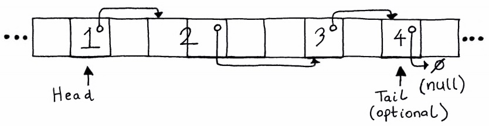
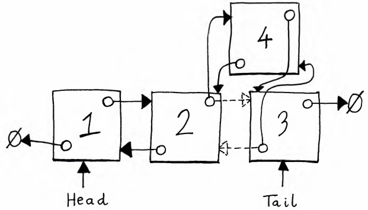

Linked list
Of all data structures, the linked list might be my favourite. Ever since I first learnt how to implement one, I've been intrigued by pointers and memory. I know; that combination isn't everyone's cup of tea, but I'm fascinated by it.
What's a linked list?
We saw in previous sections that arrays are only able to hold objects of the same size. Imagine a data structure (visualise a container) that has slots which can hold variable-size objects. We can't use contiguous blocks of memory to achieve this goal, but we can use available memory slots as long as each slot has a pointer to the next slot in the container. That's exactly what a linked list is.
Since the memory slots don't need to be near each other, a given "slot" could actually consist of multiple memory slots. All we need is to maintain the pointers. In fact, all the user of the linked list really needs to keep track of is a pointer to the "head" of the linked list. This is the first "node" of the list and enables us to find all other nodes, by traversing the chain of pointers. Some implementations also keep track of the "tail", or last node, of the list.

The concept we've described so far is known as a "singly linked list"; each node has a pointer to the
next node in the list, and the last node points to null.
Though we can traverse the list one-way
using this structure, removing nodes and traversing in the opposite direction is challenging.
(If you remove a node from a singly linked list, you need to update the pointer of its previous
node to point to the node following the removed node. Unless you use multiple pointers when looking
for the node to remove, this can lead to multiple traversals of the list.)
A simple and common solution is for each node in the list to maintain two pointers: one to the next node and one to the previous node. This is known as a "doubly linked list".
The image below shows both a singly linked list and a doubly linked list. The dotted pointers are pointers to each node's previous node. Without them, the list is a singly linked list.

What's the point?
"Okay, a linked list can store variable-size objects. But what benefits does it have apart from that?", you might be thinking. Good question. Linked lists can be used to:
- Model real-world linked objects like train carts.
- Build other data structures like stacks.
- Dynamically allocate memory on the heap.
- Efficiently insert items between other items in a list.
If that's not enough, then add the fact that there's something intriguing about traversing a chain of pointers, like trying to find your way through a maze.
Ready to see some code?
Adding elements
To add an element to an empty linked list, we create a new node, insert the element into the list and ensure the head pointer points to the new node. To add an element at the head of a non-empty list, we again create a new node. But before we point the head to the new node, we point the new node to the current head of the list.
If we have a pointer to the tail of the list, adding an element at the tail is similar. We create a new node, point the current tail to the new node and then update the tail pointer to point to the new node.
Both adding at the head and adding at the tail are constant-time operations. This is one area in which a linked list trumps a static or dynamic array. There's no need to create new arrays or stuff like that.
Inserting an element in-between two elements is a linear-time operation. We need to scan the list to find the index to insert at. In the worst case, we scan nodes until we find the index in a doubly linked list, (assuming the index exists).
The image below shows the insertion of a new node in a doubly linked list. The dotted pointers are the old pointers which are "re-routed" to point to the new node.
In a singly linked list, removal is a little bit fiddly. So we're going to look at the implementation of a doubly linked list in Java. I highly recommend implementing a singly linked list as well, though. It's good exercise.
We'll begin the class with some member variables and a helper class that represents a node.
import java.util.NoSuchElementException;
public class DoublyLinkedList<E> {
private Node<E> head, tail;
private int size;
private static class Node<E> {
private Node<E> previous, next;
private E data;
public Node(Node<E> previous, Node<E> next, E data) {
this.previous = previous;
this.next = next;
this.data = data;
}
}
}And now we'll add the … add methods.
By default, we add a new element to the tail of the list. We can also add to the head, though.
// Assume this list permits duplicates.
public void add(E element) {
addLast(element);
}
public void addLast(E element) {
if (isEmpty()) {
head = tail = new Node<>(null, null, element);
} else {
tail = tail.next = new Node<>(tail, null, element);
}
size++;
}
public void addFirst(E element) {
if (isEmpty()) {
head = tail = new Node<>(null, null, element);
} else {
head = head.previous = new Node<>(null, head, element);
}
size++;
}The final add method is actually a method to insert an element in-between two other nodes in the list. We traverse the list from either the head or the tail, create a new node for the element and update or set the relevant next and previous pointers.
public void add(int index, E element) {
if (index < 0 || index >= size) {
throw new IndexOutOfBoundsException("Invalid index; got: " + index);
}
if (index == 0) {
addFirst(element);
return;
}
if (index == size) {
addLast(element);
return;
}
int i;
Node<E> traverser;
if (index > size/2) {
for (i = size-1, traverser = tail; i > index; i--) {
traverser = traverser.previous;
}
} else {
for (i = 0, traverser = head; i < index; i++) {
traverser = traverser.next;
}
}
Node<E> newNode = new Node<>(traverser.previous, traverser, element);
traverser.previous.next = newNode;
traverser.previous = newNode;
size++;
}Removing elements
A doubly linked list makes removing elements a treat, especially if you've ever tried to write a remove method for a singly linked list. The code below implements a method to remove the current head (if it exists), a method to remove the current tail and a method to remove the element at a given index.
As with adding new elements, removal (from anywhere but the head or tail) is a linear-time operation and
requires us to update the next and previous pointers of any
existing nodes, to ensure that nobody gets a horrible NullPointerException
by trying to access nodes or pointers that (should) no longer exist.
The Java LinkedList documentation includes a few other removal methods. Feel free to add those to your implementation.
public E removeFirst() {
if (isEmpty()) {
throw new NoSuchElementException("Cannot remove from empty list");
}
E data = head.data;
if (head.next == null) {
tail = null;
} else {
head.next.previous = null;
}
head = head.next;
size--;
return data;
}
public E removeLast() {
if (isEmpty()) {
throw new NoSuchElementException("Cannot remove from empty list");
}
E data = tail.data;
if (tail.previous == null) {
head = null;
} else {
tail.previous.next = null;
}
tail = tail.previous;
size--;
return data;
}
public E remove(int index) {
if (index < 0 || index >= size) {
throw new IndexOutOfBoundsException("Invalid index; got: " + index);
}
if (index == 0) return removeFirst();
if (index == size-1) return removeLast();
int i;
Node<E> traverser;
if (index > size/2) {
for (i = size-1, traverser = tail; i > index; i--) {
traverser = traverser.previous;
}
} else {
for (i = 0, traverser = head; i < index; i++) {
traverser = traverser.next;
}
}
E data = traverser.data;
traverser.previous.next = traverser.next;
traverser.next.previous = traverser.previous;
traverser = null;
size--;
return data;
}That's it for this implementation. The linked list code is a bit more involved than the code for many of the other data structures we'll see, because of the pointer updating. But understanding how it works makes understanding many other data structures a breeze, especially those implemented using a linked list.
Key takeaways
I enjoyed writing that. I hope you enjoyed reading it and coding along.
We've seen that a linked list:
- Enables us to store variable-size objects (almost) anywhere in memory.
- Has constant-time additions to and removals from the head and tail (in a doubly linked list).
- Has linear-time additions and removals everywhere else in the list.
Regarding space complexity, the operations we've covered will be , where is the number of nodes in the linked list.